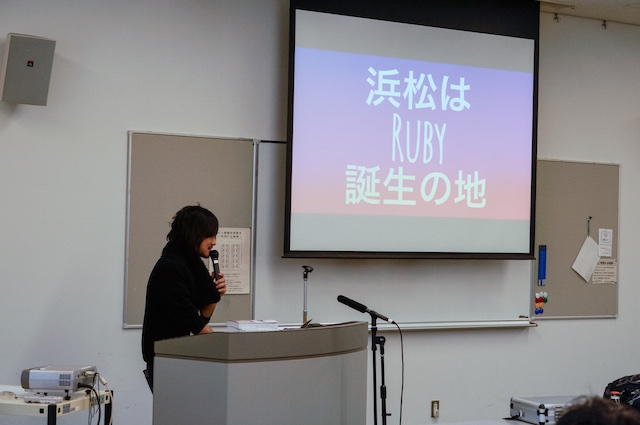

RegionalRubyKaigi レポート (52) 浜松 Ruby 会議 01
はじめに
浜松 Ruby 会議 01 は、浜松における初めての Regional RubyKaigi として、2015 年 3 月 28 日に開催されました。本記事はその様子についてレポートします。
開催概要
- 開催日
- 2015 年 3 月 28 日 (土) 10:00-17:45
- 開催場所
- アクトシティ浜松研修交流センター 62 会議室
- 主催
- Hamamatsu.rb
- 参加者
- およそ 100 名
- 公式ページ
- http://regional.rubykaigi.org/hamamatsu01
- 公式ハッシュタグ
- #hmrk01
- 浜松 Ruby 会議 01 - Twitter まとめ
- http://togetter.com/li/801050
- 映像アーカイブ
- YouTube 再生リスト
午前の部

たのしい Ruby
島田浩二さん (@snoozer05)
まだ始まったばかりの緊張感が漂う会場で、「みなさんのことを教えてください」と言って出身地や普段「住んでいる」プログラミング言語を挙手してもらう島田さん。参加者のみなさんがお互いを知ることで場が和らぎ、本題の『たのしい Ruby』(高橋征義/後藤裕蔵) へ移ります。
本書の冒頭を朗読しながら、プログラミングを「たのしむ」にはプログラミングをすることが大切だけれども、よりプログラミングすることを楽しくする言語の 1 つとして「Ruby」という言語があるんだということ、それを通して発見した「たのしい」という気持ちを他人と分かち合って、有限の人生をより「たのしい」ものにできるのがコミュニティの良いところなんだ、ということを解説してくださいました。
資料: Joyful Ruby // Speaker Deck
映像: 開会式 & たのしい Ruby (島田浩二) - YouTube
Ruby でどうやってキャリアを作ったか
増井雄一郎さん (@masuidrive)
増井さんは高校時代からプログラミングに熱中し始めました。PukiWiki を含むさまざまなオープンソース開発活動に関わりながら Ruby の良さに気付き、2005 年頃から Rails を触る傍らで執筆活動、講演活動にも参加し、海外の RailsConf 参加をきっかけに渡米もします。なかなか英語の学習機会を得られない生活で、シアトルの Ruby コミュニティや iOS アプリ、node.js の開発コミュニティとの関わりに助けられたと言います。
「プログラミングと生きてきた」という増井さんは仕事と遊びをほとんど区別せず、普段からいつでもどこでも PC を持ち歩いてコードを書いていて、最近では風呂でコードを書く「フログラマー」などと呼ばれたり、IT 芸人で検索するとトップに出たりするなど強烈なキャラクターの印象があります。誰かに役に立つ新しいものを自分の技術で作ることがエンジニアとしての喜びであり、Ruby がそのコアな技術として役に立っているという増井さんの発表からは、Ruby の良さを伝えたい気持ちがよく伝わってきました。
映像: Ruby でどうやってキャリアを作ったか (増井雄一郎 (masuidrive)) - YouTube
「納品のない受託開発」が”Ruby”と共に進む未来
倉貫義人さん (@kuranuki)
直前の増井さんによるキャリアについての発表に負けじと急遽スライドを差し込んで紹介する倉貫さん。SIer のシステム開発に絶望してから転職、社内ベンチャー (株式会社ソニックガーデン) の起業と独立を果たして、今回の話の土台が出来上がります。
倉貫さんが提唱する「納品のない受託開発」は、プログラマが顧客のビジネスを IT で支えて成長を見守る技術顧問という立場をとるというもの。システムを作ることよりもシステムによって顧客がやりたいことを達せられているかが重要であり、最初の要件定義も納期もプログラマの作業量もドキュメントもここでは意味を成さないというわけです。
大量生産が縮小すると考えられる少子高齢化社会ではクリエイティブあるいは問題解決型の職業が生き残り、顧問プログラマもそこに入るでしょう。誰かのビジネスを支える顧問プログラマは難しいですが生涯をかける価値がある仕事であり、やがて憧れの職業になる社会が訪れるよう活動をしています、というお話でした。
映像: 「納品のない受託開発」が”Ruby”と共に進む未来 (倉貫義人) - YouTube
午後の部
Rubyist のための型入門
mzp さん (@mzp)
変数の「型」という視点から発表。Ruby を含む LL (Lightweight Language) なプログラミング言語が普及した背景には、Java や C++といった静的型付け言語に比べて文法が簡便で動かしやすいことが挙げられるが、最近登場した Scala や F#、Ocaml/Haskell といった静的型付け言語もそのデメリットを克服しつつあると述べていました。さらに、型推論や型を作る方法など最近の型システムについても紹介。「型は制約」であり、「できることが減るが、誤りも減らす」のでケース・バイ・ケースで型システムを利用しましょう、とまとめられました。
ブログ: 浜松 Ruby 会議 01: Rubyist のための型入門 #hmrk01 - みずぴー日記
資料: Rubyist のための型入門 // Speaker Deck
映像: Rubyist のための型入門 (mzp) - YouTube
RailsGirls と、私。
やだけいこさん (@yadaita)
「Rails Girls はより多くの女性がプログラミングに親しみ、アイデアを形にできる技術を身につける手助けをするコミュニティです。」日本でも今までに 13 回の Rails Girls が開催され、1 日目に環境セットアップ、2 日目にアプリの作成をするワークショップが大半だそうです。やださんは、プログラミングの楽しさを共有することの楽しさや面白さが Rails Girls に関わる理由だと言います。また、Rails Girls を通じて得られた学びとして、最初の一歩を踏み出していくことの大切さをアピールしました。
資料: RailsGirls と、私。(浜松 Ruby 会議 01)
Ruby 未経験だった僕がドヤ顔で偉そうなことを言えるようになるまでの 3 年間
伊藤淳一さん (@jnchito)
のどかな土地で充実した開発環境を使いながら仕事をしつつ、CodeIQ に出題したり、Qiita の Ruby/Rails に関する記事でストックを大量に得たり、RSpec に関する洋書を翻訳したり……といった自慢話を「どやっ」と (もちろん笑いをとる意味で) 語りつつ、そんな僕も昔は初心者で「会社で一番のへたくそ」でした、と伊藤さん。入門書に載っているような仕様が実務レベルでは存在しないことが Ruby や Rails の難しさの壁だったと言います。翻訳作業で知識を身につけたり RubyMine による効率的な開発を可能にしたり一方で、毎日コードを書いて誰かと相互にレビューを行い、ブログや Qiita などへのアウトプットする習慣を続けることは、将来「どやっ」とするための大切だと語りました。
資料: Ruby 未経験だった僕がドヤ顔で偉そうなことを言えるようになるまでの 3 年間 / #hmrk01 // Speaker Deck
映像 (前半): [前半] Ruby 未経験だった僕がドヤ顔で偉そうなことを言えるようになるまで - YouTube
映像 (後半): Ruby 未経験 (後編) & KIDS, RUBY, FUN! スモウルビーと Ruby プログラミング少年
KIDS, RUBY, FUN! ～ スモウルビーと Ruby プログラミング少年団の紹介 ～
高尾宏治さん
中学生の 91% が Ruby を知っている町はどこでしょう? 答えは Matz 氏でお馴染みの島根県松江市です。タイピング・英語・文法の知識が必要なプログラミングは子どもにとって難しいものとされてきましたが、「Scratch」のようなツールを通して子ども向けプログラミング教育が世界的に普及しているのもまた事実です。そこで開発された「スモウルビー (Smalruby)」では、ブロックを組み合わせる GUI を採用することでプログラミングを現実的なアナロジーで理解しやすくしています。また、ブロックは Ruby ソースコードと切り替え可能で、子どもの好きなタイミングでプログラミング方法を変えられます。これらの工夫によってプログラミング学習のハードルを無くし、子どもがプログラミングの楽しさを体験しやすくすることを可能にしています。高尾さんはプログラミング少年団を立ち上げて地域社会での情報教育・情報倫理を広めるとともに、プログラミングを教えたい人や学びたい人のための活動を支援できる社会の実現のために取り組んでいるとのことです。
映像: Ruby 未経験 (後編) & KIDS, RUBY, FUN! スモウルビーと Ruby プログラミング少年
3 年目終わりに思うエンジニアとして必要な事
sea_mountain さん (@sea_mountain)
Hamamatsu.rb “卒業生” の sea_mountain さんによる発表です。学生時代の授業がきっかけでプログラミングが趣味になり、インターンや Hamamatsu.rb での翻訳 LT を経て自信を持った後、入社後のチーム開発やコードレビューを通して不足していた知識を補ったという sea_mountain さん。入社 3 年後の今、人と関わりながら成長することの大切さを語ります。今いる業界や学校の外の世界を知るきっかけだったと同時に、もっと積極的に挑戦や相談をすればよかったと、Hamamatsu.rb についてふりかえっています。
ブログ: 浜松 Ruby 会議 01 にて”3 年目終わりに思うエンジニアとして必要な事”という話をしました - うみやま亭
資料: 3 年目終わりに思うエンジニアとして必要な事 // Speaker Deck
Ruby とスタートアップと、私
沢登哲也さん
Ruby on Rails がきっかけの学生起業について、サービスの開始からシェアスペースでの作業とリモートワーク、資金調達に至るまでの成功と失敗そして反省、会社・サービス・資金がうまく回るには……というお話。起業は様々な悩みを抱えることになりますが、その体験を通して自分が一生やり続けたいことを見つけることができるようになったと言います。今後はインターネットに加えて元々の専門だったロボットを融合した新しいテクノロジーを作って人をワクワクさせたいと語っていました。
Ruby でなにか自動化する話
大野浩誠さん (@xoyip)
人の手でやれば済む作業だけど、毎回同じことをやるのがちょっと許せない、だから自動化したい。大野さんはそんな気持ちでいくつかの gem を開発していて、今回は markdown 文書の見出しに自動で番号を振る markdown_section_numbering や、チャットアプリの投稿を通じて heroku アプリを操作する ruboty-heroku、さらに複雑な merge 操作をこなす ruboty-heroku_merge を紹介していました。人間を時間から自由にする自動化を自分で実現できるのは素晴らしいですね。
The history of Hamamatsu.rb
加藤匡邦さん (@mackato)
イベント冒頭で実行委員長の小木さんにあらかたな浜松ネタを先に言われてしまったので、「浜松は静岡県だけど、静岡じゃなくて浜松だよ」というネタでしっかりと笑いをとる加藤さん。読書会、もくもく会、発表・ LT などの活動、ふりかえりツールの KPT、役割分担、反省会など、参加者数の維持と共に充実していく Hamamatsu.rb とその他のコミュニティを紹介。考える前に参加すれば仲間もできて、新しいコミュニティを仲間と始めやすいし、sea_mountain さんや沢登さんのように Ruby に関わったり仕事が変わったりと人生が変わるきっかけになるかもしれませんね。
映像: The history of Hamamatsu.rb (加藤匡邦)
Ruby x Arduino でシンセサイザーを作ってみた
石垣良さん (@risgk)
マイコンボード「Arduino」用シンセサイザーのプロトタイプとして、Ruby で開発したソフトシンセについて語っていただきました。基本的なシンセサイザーの仕組みから、実際の Ruby のソースコードを見せながらの実装方法の紹介まで詳しく説明。今回一番の技術系の発表だったかと思います。そんな感じで、組込みソフトウェア開発でも Ruby が役立つということを示されていました。余談ですが、テキストエディタに表示する Markdown テキストによるプレゼンは一部の方々にウケていたようです。
資料: Ruby x Arduino でシンセサイザーを作ってみた #hmrk01
映像: Ruby x Arduino でシンセサイザーを作ってみた (石垣良)
エンジニアのためのモチベーション戦略
小木悠斗さん (@jacoyutorius)
エンジニアが生きていくために必要なモチベーション維持の方法論についてです。漫画「ドラゴンボール」の孫悟空 (以下 S) とベジータ (以下 B) で喩えると、S は「楽しい」から戦い、B は「悔しい」から戦います。彼らの挫折と成長の姿は、どうやら IT 業界で生きる人々にも当てはまるようです。「悔しさ」の B タイプであるという小木さんは、負の感情をポジティブに変換するため、「～を超えたい」とか、「～より良いコードを書こう」などと思えるような「仮想敵」を (某ライバルキャラクターに見習って) 作れば健全にモチベーションを保っていけるんじゃないか、ということを語っていただきました。
資料: 浜松 Ruby 会議 01
まとめ

今回初めての浜松における Regional RubyKaigi ということで、我々 Hamamatsu.rb のメンバーも緊張しながら、ご来場いただいた方々に満足してもらえるのかと不安を抱いていたのですが、蓋を開けてみれば非常に大盛り上がりなイベントとして成功できたことに、大きな喜びを感じています。
今回発表を快諾していただいた発表者の皆様、ご来場くださった参加者の皆様、また浜松市企画課で担当いただいた外山さん、Ustream 中継を担当していただいた上野さん (@katzueno)、そしてイベントに向けて一年間動いてきた Hamamatsu.rb の実行委員の皆様に感謝の言葉を述べたいと思います。ありがとうございました。
Hamamatsu.rb のご紹介
毎月第 2 水曜日の夜に集まり、もくもく会、勉強会、LT などを行っています。Ruby やプログラミングに興味のある人は、誰でも参加可能です。定例会の参加者はDoorkeeperで募集しています。
- Hamamamatsu.rb
- ハッシュタグ: #hmrb
著者について
suneo3476 (@suneo3476Doc): Hamamatsu.rb メンバー、参加レポート担当。現在は静岡大学の情報系大学院生。